Activity: Reorient the steering wheel
This activity guides you through the process of reorienting the steering wheel. The steering wheel orientation controls the movement direction of selected geometry during a synchronous operation.
Click here to download the activity file.
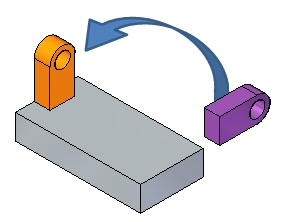
If you are using Internet Explorer and a video is not displaying in your training guide, click the Tools tab (or gear icon)→Compatibility View settings, and then clear the selection of Display intranet sites in Compatibility View.
Examine the components used for reorienting the steering wheel. In this activity, a geometric feature moves using the steering wheel. The steering wheel orients to define the move direction.
Open steering_wheel.par.
A move occurs between the move from point to the move to point. The move from point is always the steering wheel origin. The move to point can be a keypoint, user-defined distance, or a drag and click location.
In PathFinder, select the feature named feature A.
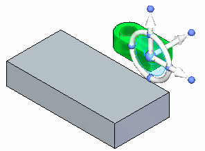
Click the axis shown. As you drag the cursor up and down, notice the feature moves in the direction defined by the selected axis.
At this point, you can drag and click to define the move distance, type a distance value in dynamic edit box, or select a keypoint.
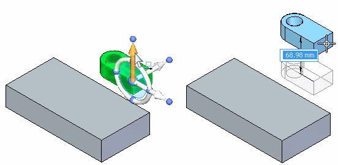
Press the Escape key to end the move.
Click the axis shown. As you drag the cursor, notice the feature moves in the direction defined by the selected axis.
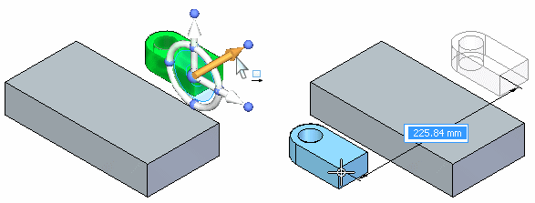
Press the Escape key to end the move.

You can change an axis direction in 90° increments by clicking a knob on the torus.
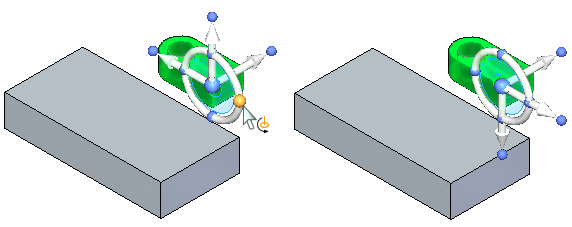
You can change the selected axis direction at a user-defined point or a drag and click point to define direction angle.
Hold the Shift key and click the axis knob.
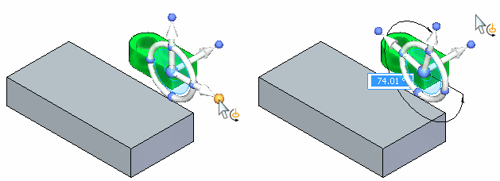
Move feature A at a 45° direction angle. Once the angle is set (1), click the axis (2) to start the move. Image (3) shows a front view to better visualize the 45° movement.
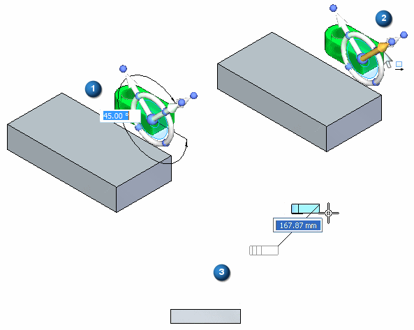
Press the Escape key to end the move.
You can perform a free move to any point on the steering wheel plane. Click the steering wheel plane and drag the selected geometry to a desired location and then click, or select a keypoint.
Select feature A.
Click the steering wheel tool plane. Drag the feature around and notice that the movement is locked to the steering wheel plane.
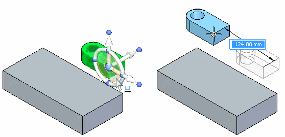
Press the Escape key to end the move.
Clicking the torus starts a rotate operation. The rotation axis is the axis normal to the tool plane. You click the steering wheel torus and drag and then click to define the rotation angle. You can also type a rotation angle in the dynamic edit box.
Select feature A.
Click the torus and rotate feature A 90°.
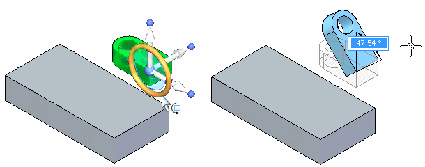
Click to end the Rotate command.
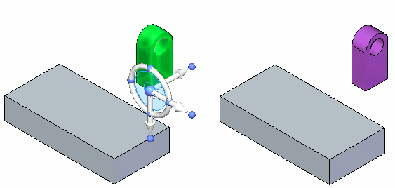
You change the direction of the normal axes by holding down the Shift key and clicking the steering wheel torus plane.
Select feature A.
Hold down the Shift key and click the steering wheel plane.
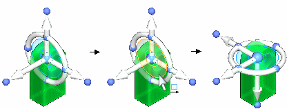
This is a quick method of changing the rotation axis.
Press the Escape key.
You can change the direction of an axis by clicking the axis knob and then selecting a geometric keypoint.
Select feature A.
Reposition the point on the feature to move from. Select the steering wheel origin and then drag the origin to the corner of the selected feature shown.
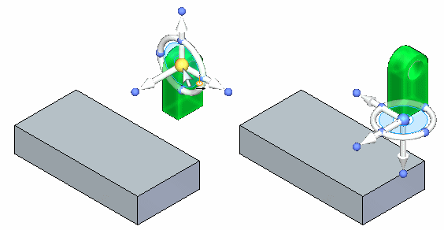
You want to move the feature to corner (1). Define the direction axis pointing to corner (1).
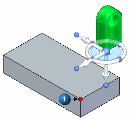
Click the primary axis knob. Move the cursor over corner (1) and click when the endpoint displays.
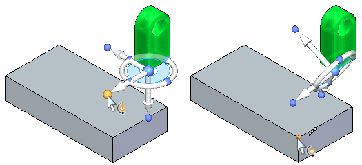
Click the axis and notice the direction of movement.
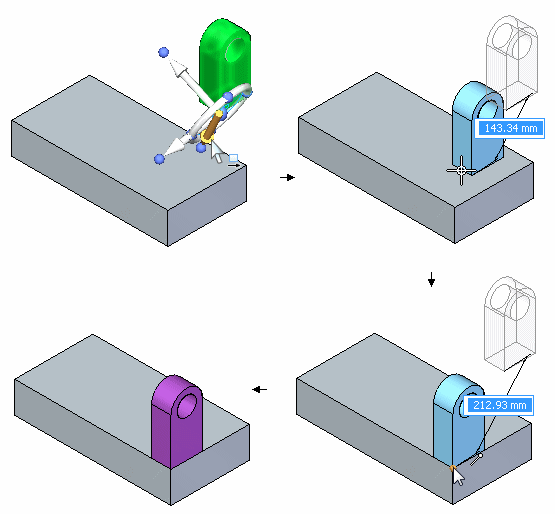
At this point if you click the endpoint shown, the feature moves to that point.
Press the Escape key twice to cancel the operation.
If you want to maintain a steering wheel orientation at a different location, you hold the Shift key down, click the steering wheel origin, and drag it to the desired location. If the origin is close to a keypoint, it snaps to that point. Click to position origin to that point.
Select feature A.
Hold the Shift key down and click the steering wheel origin.
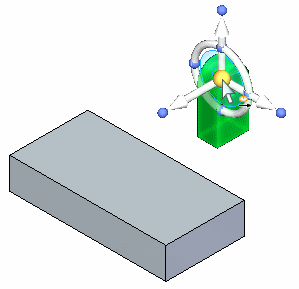
Drag the steering wheel origin over the model (at the corners and edge midpoints) and notice that the steering maintains the orientation.
If you repeat the same step without holding down the Shift key, the steering wheel orientation changes as it passes over the model edges, corners and faces. The normal axis aligns with the edge it passes over.
The first part of the demonstration shows moving the origin without holding the Shift key. The second part shows how the steering wheel orientation maintains when the Shift key is held down.
Move the feature to the location shown. Make sure the feature has the same orientation as shown.
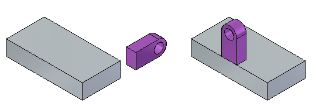
Turn off the display of feature A. In PathFinder, click the box in front of feature A.
Turn on the display of feature B.
Rotate feature B. Select feature B.
Click the torus, type 90 in the dynamic edit box, and then click.
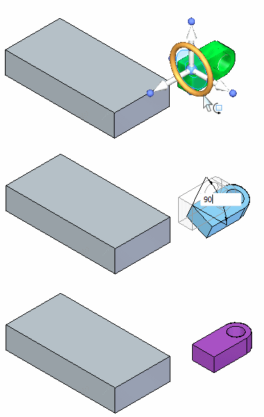
Rotate the feature again to complete the orientation. Position the steering wheel origin as shown. Click the torus. Drag and type 90 in the dynamic edit box. Press the Tab key and then click.
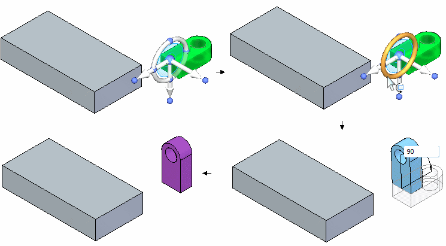
Move the feature to new location. Select feature B. Position the steering wheel origin as shown (midpoint of edge). Define the axis direction to point to the edge midpoint on part. Click the axis to start the move. Move the cursor over the edge midpoint and click when the midpoint highlights. Press Escape to end the move operation.
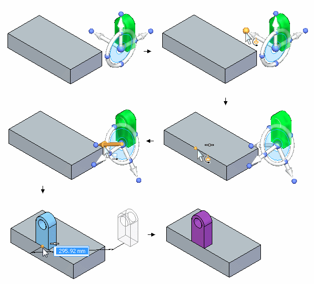
Try positioning the feature at other locations on the part.
In this activity you learned how to reorient the steering wheel to accomplish desired move and rotate operations.
Click the Close button in the upper-right corner of the activity window.